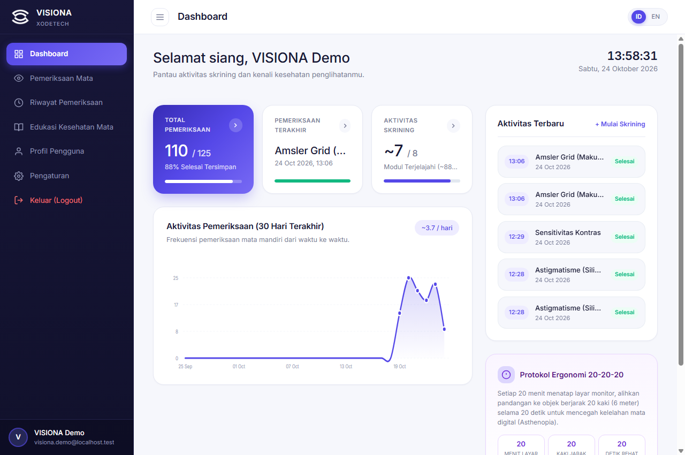
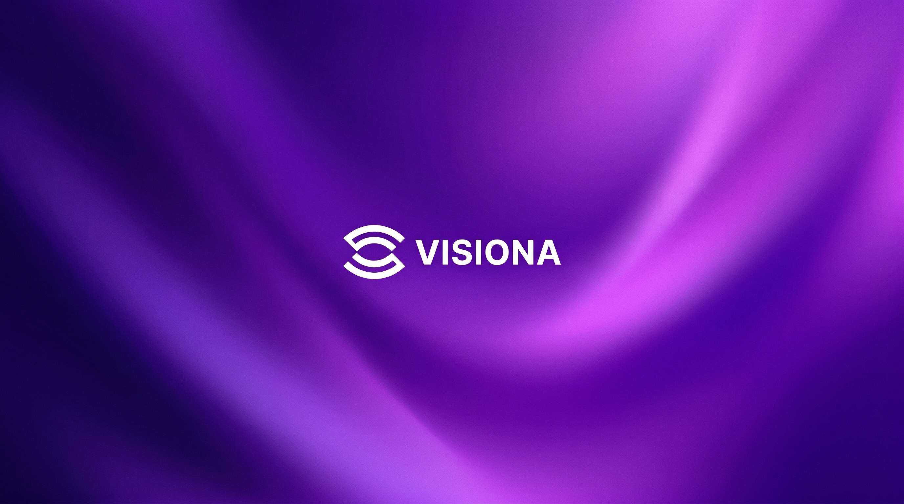

Autentikasi Akun Lokal
Gunakan username dan password untuk mengakses akun VISIONA Anda. Informasi akun dan riwayat skrining dikelola melalui sistem penyimpanan aplikasi.
VISIONA adalah aplikasi desktop mandiri untuk membantu masyarakat mengevaluasi fungsi penglihatan secara terstruktur melalui rangkaian pemeriksaan digital komprehensif.

Mengadopsi prinsip optometri terstandar seperti optotipe terukur, dial meridian astigmatisme, dan grid evaluasi makula.
Simpan dan tinjau riwayat skrining penglihatan Anda, serta pantau hasil pemeriksaan mandiri dari waktu ke waktu melalui dashboard VISIONA.
Menekankan edukasi dan deteksi awal. Aplikasi tidak menggantikan pemeriksaan komprehensif dokter spesialis mata (Sp.M).
Kenali pengalaman skrining penglihatan mandiri melalui VISIONA. Jelajahi fitur pemeriksaan, tinjau hasil, dan pantau riwayat skrining dalam satu aplikasi yang dirancang sederhana dan mudah digunakan.
Evaluasi terstruktur untuk meninjau gejala penglihatan yang Anda rasakan. Mengidentifikasi tanda bahaya yang memerlukan pemeriksaan spesialis mata segera.
Alur penggunaan aplikasi desktop dirancang agar mudah diikuti oleh siapa pun dalam kenyamanan ruangan Anda.
Unduh paket installer resmi sesuai sistem operasi desktop Anda (Windows atau macOS) ketika versi rilis sudah tersedia.
Gunakan username dan password untuk mengakses akun VISIONA Anda. Informasi akun dan riwayat skrining dikelola melalui sistem penyimpanan aplikasi.
Pilih pemeriksaan yang diinginkan, atur pencahayaan dan jarak layar sesuai instruksi, lalu selesaikan tes pada layar.
Baca klasifikasi hasil skrining mandiri secara langsung dan pantau perkembangan riwayat pemeriksaan Anda melalui dashboard aplikasi.
Kami percaya bahwa data kesehatan mandiri Anda harus dikelola dengan prinsip privasi dan transparansi yang ketat. VISIONA dirancang agar informasi Anda tetap terlindungi dan berada dalam kendali penuh Anda.
Gunakan username dan password untuk mengakses akun VISIONA Anda. Informasi akun dan riwayat skrining dikelola melalui sistem penyimpanan aplikasi.
Catatan skrining merupakan arsip pribadi untuk pemantauan mandiri, bukan rekam medis publik, dan tidak pernah dibagikan atau dijual ke pihak ketiga.
Pengguna memiliki kendali penuh untuk meninjau seluruh riwayat skrining mandiri serta mengelola data pemeriksaan di dalam akun aplikasi kapan saja.

VISIONA menghadirkan pengalaman skrining penglihatan mandiri melalui antarmuka yang sederhana, hasil pemeriksaan yang mudah ditinjau, dan riwayat yang membantu pengguna memantau perkembangan penglihatan dari waktu ke waktu.
Dirancang untuk membantu Anda lebih memahami hasil skrining mandiri.
Aplikasi desktop VISIONA dirancang untuk distribusi mandiri pada sistem operasi Windows dan macOS.
Paket aplikasi mandiri untuk PC dan laptop berbasis Windows dengan dukungan tampilan layar beresolusi tinggi.
Aplikasi desktop mandiri untuk Mac dengan dukungan perangkat yang benar-benar kompatibel dan tampilan yang sesuai untuk layar Retina.
Catatan: Halaman ini merupakan situs resmi informasi dan distribusi aplikasi desktop VISIONA. Sistem operasi Linux tidak didukung. Paket biner Windows mandiri (installer dan portabel) telah dikompilasi secara lokal dan siap didistribusikan melalui rilis resmi.